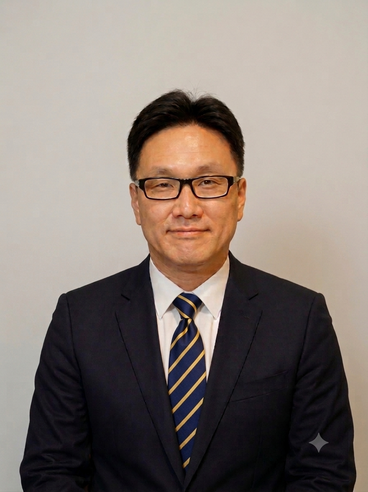

Han Soo Kim, TCM Practitioner 김한수 원장 — 한의사
Han Soo Kim believes that every patient has a unique story worth listening to. He values compassionate, patient-centred care that supports both physical and emotional well-being. With over 10 years of clinical experience, he provides personalised Traditional Chinese Medicine care tailored to each patient. 김한수 원장은 사람 한 분 한 분의 이야기에 귀 기울이며, 몸과 마음의 회복을 함께 돕는 진료를 소중히 생각합니다. 10년 이상의 임상 경험을 바탕으로 환자 개개인에게 맞는 치료를 제공하고 있습니다.

Personal Story & Background 개인 이야기 및 이력
When I was young, I was involved in an accident that required a long period of hospital treatment. During my recovery, I also received acupuncture and Chinese herbal medicine, and I experienced firsthand how much they helped me regain my health. That experience ultimately inspired me to study Traditional Chinese Medicine, even later in life.
To me, Traditional Chinese Medicine is a lifelong journey of insight and understanding. It is a discipline that continually teaches us to see beyond symptoms and to understand the whole person. Without genuine insight, it is difficult to discover the most appropriate path for a patient's recovery.
Over the years, I have come to realise that many of the answers already exist within the patient. Their words, their posture, their medical history, and even the smallest details of their daily life often reveal the underlying cause of their condition. The ability to recognise these clues comes through careful observation, experience, and continual learning.
Over more than a decade of clinical practice, I have had the privilege of caring for people from many different walks of life. I have treated patients living with cancer, chronic illnesses, persistent pain, and emotional distress. More than simply providing treatment, I have always hoped to be someone who offers encouragement, compassion, and genuine support throughout their healing journey.
Some patients have allowed me to walk with them all the way toward remarkable recovery, while others have chosen to continue their journey once they reached a level of improvement that brought them comfort and hope. Many people find happiness simply by regaining enough health to enjoy their daily lives again, even if their recovery is not yet complete.
For me, however, the greatest reward has always been seeing my patients smile again.
Helping people regain their health, restore their confidence, and rediscover joy is the purpose that continues to inspire my work every day. When I see a patient smile because they have recovered, I feel as though I have received the greatest reward I could ever hope for. That is where I find the deepest meaning and happiness in being a practitioner of Traditional Chinese Medicine.
어린 시절, 저는 오랜 기간 병원 치료를 받아야 했던 사고를 겪었습니다. 회복하는 동안 침 치료와 한약 치료도 함께 받았는데, 그것들이 제 건강을 되찾는 데 얼마나 큰 도움이 되는지를 직접 경험했습니다. 그 경험은 결국 제가 늦은 나이에도 한의학을 공부하도록 이끈 계기가 되었습니다.
저에게 한의학은 통찰과 이해를 향한 평생의 여정입니다. 한의학은 증상 너머를 보고 사람을 하나의 온전한 존재로 이해하도록 끊임없이 가르쳐 주는 학문입니다. 진정한 통찰이 없다면 환자에게 가장 알맞은 회복의 길을 찾기란 어렵습니다.
오랜 시간 진료를 이어오며, 저는 많은 답이 이미 환자 안에 있다는 것을 깨닫게 되었습니다. 환자의 말, 자세, 병력, 그리고 일상의 아주 작은 부분까지도 그 증상의 근본 원인을 드러내 주는 경우가 많습니다. 이러한 단서를 알아보는 능력은 세심한 관찰과 경험, 그리고 끊임없는 배움을 통해 길러집니다.
10년이 넘는 임상 경험 동안, 저는 다양한 삶을 살아오신 여러 환자분들을 돌보는 소중한 기회를 가졌습니다. 암, 만성 질환, 지속적인 통증, 그리고 정서적 어려움을 겪는 환자분들을 치료해 왔습니다. 단순히 치료를 제공하는 것을 넘어, 저는 늘 그분들의 치유 여정 내내 격려와 따뜻함, 그리고 진심 어린 지지를 전하는 사람이 되기를 바랐습니다.
어떤 환자분들은 놀라운 회복에 이르기까지 저와 함께 그 길을 끝까지 걸어 주셨고, 또 어떤 분들은 편안함과 희망을 느낄 만큼 호전되신 뒤 스스로의 여정을 이어가기로 하셨습니다. 많은 분들이 회복이 아직 완전하지 않더라도, 다시 일상을 누릴 수 있을 만큼 건강을 되찾는 것만으로도 행복을 찾으십니다.
그러나 저에게 가장 큰 보람은 언제나 환자분들이 다시 웃는 모습을 보는 것이었습니다.
사람들이 건강을 되찾고, 자신감을 회복하며, 삶의 기쁨을 다시 발견하도록 돕는 것 — 그것이 매일 제 일에 영감을 주는 이유입니다. 환자분이 회복하여 웃음을 지으실 때, 저는 제가 바랄 수 있는 가장 큰 보상을 받은 것처럼 느낍니다. 바로 그곳에서 저는 한의사로서 가장 깊은 의미와 행복을 찾습니다.
Qualifications & Credentials 자격 및 경력
1. Professional Registration
- Registered with the Chinese Medicine Board of Australia (AHPRA)
2. Education
- Bachelor of Traditional Chinese Medicine, Sydney Institute of Traditional Chinese Medicine
3. Professional Experience
- 10+ years of clinical experience
- Private practice
- Home visit services
- Aged care experience
4. Professional Development
- Continuing Professional Development (CPD)
- Regular professional education
- Clinical seminars and workshops
5. Professional Insurance
- Professional Indemnity Insurance
6. Languages
- English
- Korean
7. Professional Approach
- Evidence-informed practice
- Patient-centred care
- Individualised treatment plan
1. 전문 등록
- 호주 한의학위원회(Chinese Medicine Board of Australia, AHPRA) 등록
2. 학력
- 한의학 학사(Bachelor of Traditional Chinese Medicine), 시드니 한의과대학(Sydney Institute of Traditional Chinese Medicine)
3. 임상 경력
- 10년 이상의 임상 경력
- 개인 진료(Private practice)
- 방문 진료 서비스
- 요양·노인 돌봄 진료 경험
4. 전문성 개발
- 지속적 전문성 개발(CPD)
- 정기적인 전문 교육
- 임상 세미나 및 워크숍
5. 전문 보험
- 전문인 배상책임보험(Professional Indemnity Insurance)
6. 사용 언어
- 영어
- 한국어
7. 진료 접근 방식
- 근거 기반 진료(Evidence-informed practice)
- 환자 중심 진료(Patient-centred care)
- 개인 맞춤형 치료 계획
Clinical Philosophy
한의 진료 철학
Ready to book a consultation? We'd love to hear from you. 진료 예약을 원하십니까? 언제든지 연락 주세요.
Contact Us문의하기